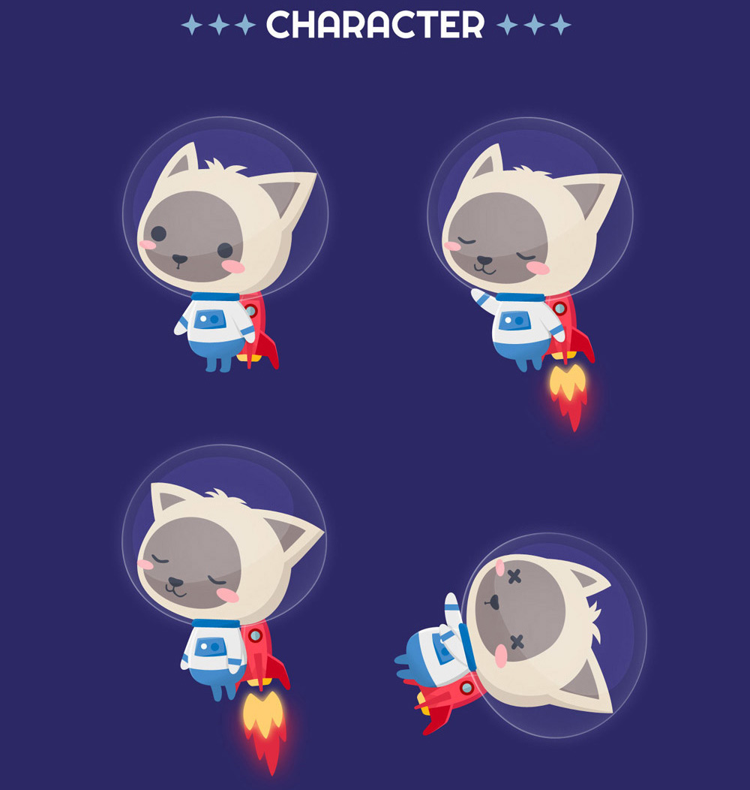
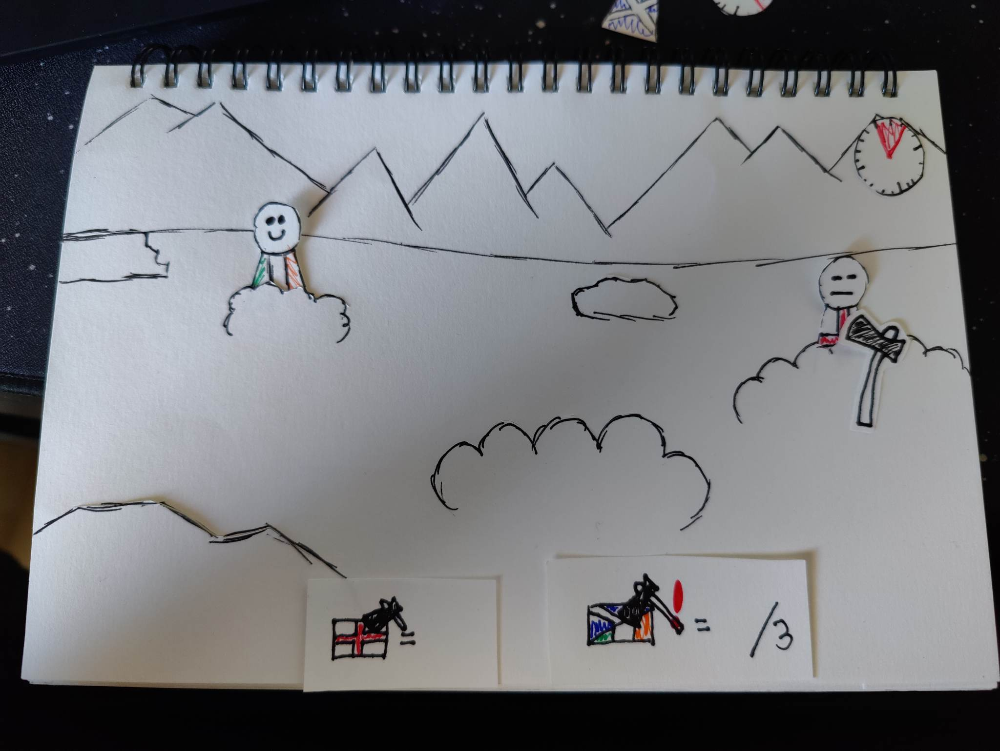
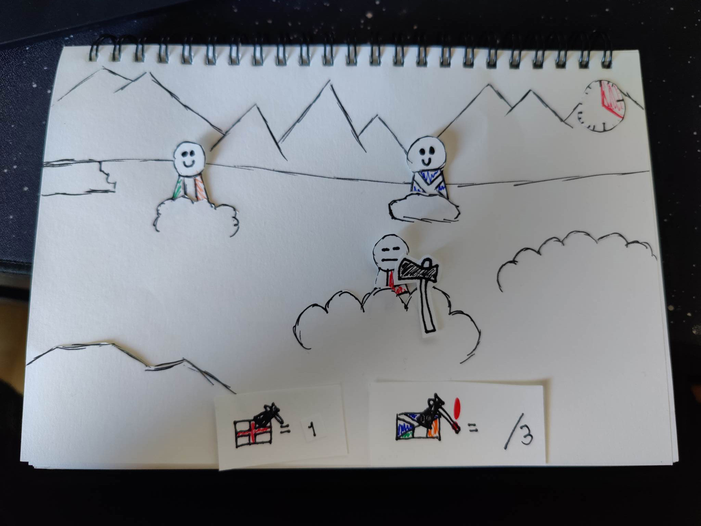
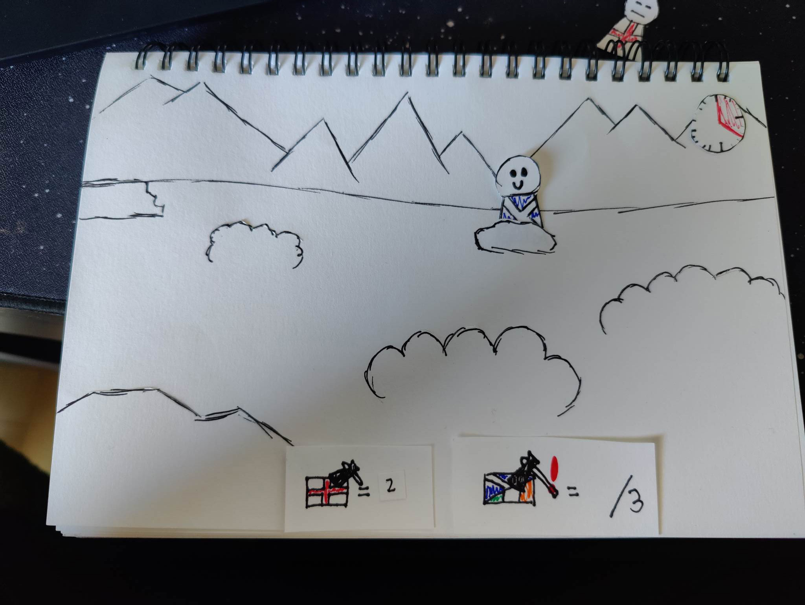
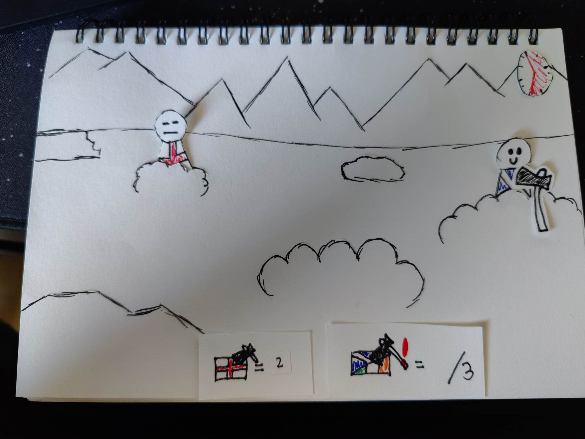
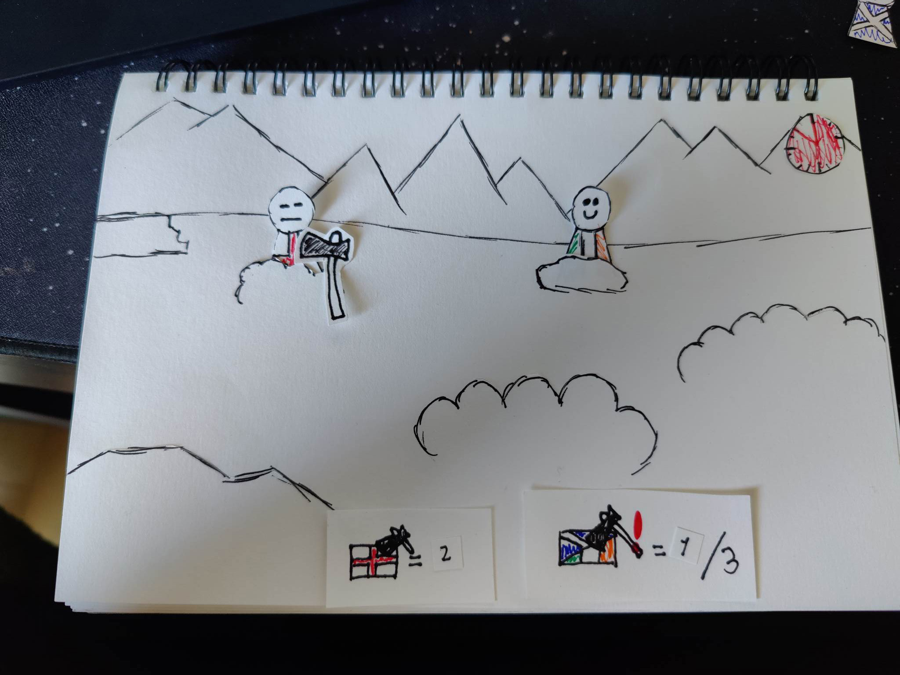
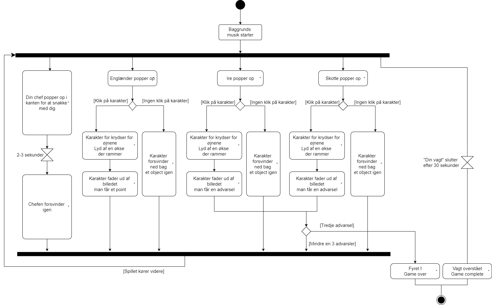
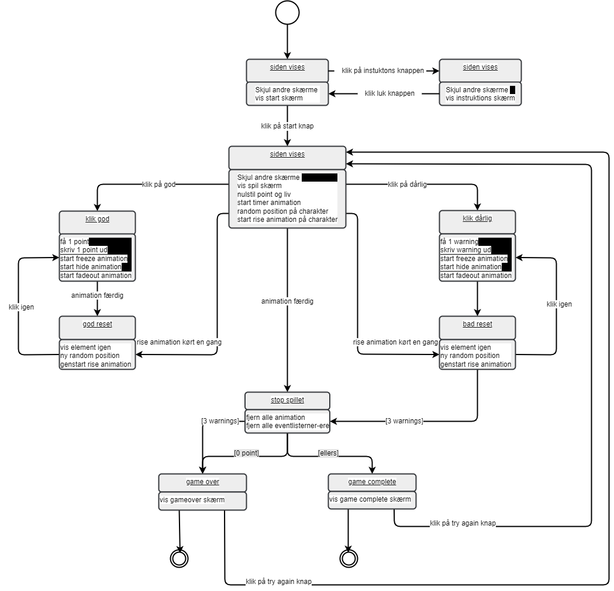

Tema 4
På dette tema har vi videre arbejdet med rigtig meget af det vi lærte på tema 2 og bygget videre på den viden. Vi har arbejdet i forskellige faser op til slutproduktet, med forskellig fokus i hver fase.
Herunder vil jeg vise de forskellige faser med den samlet viden og produktivitet samt billeder af det vi har arbejdet med i klassen, og på temaopgaven.
Første fase
I den første fase arbejdede vi med vores spilkoncept og de ideer vi havde. Her fik vi også præsenteret kravene til den endelige opgave, og hvilke muligheder der var i form af den kode, vi senere vil lære (fx. der skal kun være et level, mindst en god og en dårlig karakter osv).
Designstil
Vi startede ud med at vælge en stil ud fra et kæmpe udvalg (der blev præsenteret i klassen)
Jeg valgte selv space up!, der gør meget brug af baby bias (stort hoved, lille krop og simple mimik med øjne, næse og store røde kinder), bouba (runde former) effekt og er meget minimalistisk designet.
Jeg kunne rigtig godt lide hvor simpelt designet var, men at der stadig var dybde i form af skygger og ingen lige linjer
Der er brugt meget simple former til at bygge karakteren op, øjnene er små helt runde cirkler, kinderne er ovale, der 3 enkelte totter hår på hovedet der indikere at karakteren er pelset. Og så er der ikke brugt stroke.
Jeg tog rigtig meget inspiration i måde kroppen, armene og benene er tegnet, samt krydserne for øjnene når karakteren dør. Det var vigtigt for mig at lave en tydelige illusion af, at man som spiller havde ramt en karakter, udover at man selvfølge får point eller en advarsel.
Space Up! har også designet en meget monoton bagrund, med en monokrom farvepallette, det skaber en baggrund hvor der stadig er en form for dybde, men den er heller ikke overvældene, i øjenfaldende eller forstyrende for spilleren. Det gør også at de elemtenter man skal ungå lyser mere op, i kontrast til den meget mørke baggrund.
Space Up!
Koncept
Derefter skulle vi i gang med at finde et koncept til vores eget spil. Vi fik udleveret et idegenererings krydsliste-øvelse og forskellige mind maps hvor vi skulle ide genere nogle koncepter.
Jeg blev opmærksom på at jeg blev meget fastlåst af disse metoder og valgte i stedet at lave en liste med ideer, hvor jeg meget simpelt skrev om en karakter, spil processen og nogle simple regler. Jo længere jeg kom med mine ideer kunne jeg mærke at de blev mere og mere kreative og fandt til sidst på The Highland Game, som kan ses til højre.
Nogle andre ideer jeg hvavde var blandt andet et dedektiv spil, hvor man på en sort skærm skulle lyse med sin lommelygte (curseren) for at finde ting i mørket. Jeg blev dog klar over at koden nok ville blive lidt besværlig, samt ikke særlig brugervenligt for mobilspiller.
Og så havde jeg en ide om et hyrdehunde spil, hvor man skulle hjælpe med at fange får/ungå rævende der lurrede, men så kom jeg på højlandspillet og det synes jeg var en meget sjovere ide.
Spil-ide
Du skal hjælpe den skotske grænsekontrol med at sortere i skotter, irer og englændere. De forbandede englændere må selvfølgelig ikke komme over grænsen, så de får en økse i ansigtet (ved klik med musen, der er formet som en økse).
De forskellige karakterer popper op bag ved buske, sten eller hegn placeret i det skotske højland.
Hvis man får ramt en skotte eller en irre med en økse får man en advarsel. Ved tredje advarsel bliver du fyret.
Spillet handler om at sætte rekord i hvor mange englændere du kan nå at få økset ned inden din vagt som grænsekontrol medarbejder er slut.
Jeg har lavet en papirprototype af konceptet som kan ses nedenunder
Her er en lille scene liste
- Scene 1 = Englænder bliver ramt = 1 point
- Scene 2 = Ny englænder bliver ramt = 2 point
- Scene 3 = Ingen englændere at ramme
- Scene 4 = Skotte bliver ramt = 1 advarsel
- Scene 5 = Tiden er ved at løbe ud
Scene 1
Scene 2
Scene 3
Scene 4
Scene 5
Skitser og Illustrator
Med de designprincipper og konceptet, skulle jeg selv i gang med at skitsere mine spilelementer, karakterer, baggrunde osv.
Måden jeg gjorde det på var at tegne en masse skitser i hånden, hvorefter jeg tegnede over den karakter jeg bedst kunne lide, i illustrator, så gemte jeg de forskellige kropsdele i biblioteket så jeg kunne bruge dem som base til de andre karakterer.
Mange af UI elementerne, baggrunden og forgrunden tegnede jeg hånden (altså uden en skitse bag ved). Vi lærte også at eksportere vores artboards til SVG’er som kunne lægges ind i vores kode.
Jeg endte med at lave nogen af UI elementerne om efter at have indsat dem i mine kode. Jeg gjorde det blandt andet, fordi det var svært at se point og advarsler. Og så ændrede jeg uret til at have visere.
Her er lidt billeder af den proces
Skitser
Anden fase
I den anden fase tog vi fat på opbygningen af vores HTML-struktur, vi byggede videre på den viden vi havde fået på tema 2 og lærte at bruge ID frem for klasser, at strukture hvilke elementer der skulle ligge i de forskellige ID’er og så lærte vi at lave animationer med keyframes, som vi senere skal bruge i vores Javascript.
Samt vi lærte at indsætte vores spilelementer ind (baggrunde, karakterer, UI og de forskellige forgrunde) og plasere dem med CSS ved at bruge transform og positionering.
Tredje fase, fjerde fase og femte fase
Det var de disse 3 faser, vi lærte Javascript.
Vi startede blødt ud med at lære at styre de forskellige elementer i spillet fx. start og stop af animationer. Vi lærte hvordan vi kunne få spil elementerne til at dukke op nye steder efter animation stop.
Jeg havde selv valgt at mine karaktere, ved at klikke stoppede op, ændre mimik til død (animere mellem visning af to karakter designs) samt en fade-out inden den skulle dukke op et nyt sted.
Efterfulgt lærte vi at programmere de funktioner der gør at vi optjener point, mister liv og at der er en mulighed for at vinde spillet.
I mit design var det meget vigtigt at gøre det klart for spilleren, at man optjente point ved at klikke på den “onde” figur og få advarsler (miste liv) hvis man trykkede på de “gode”, samt at jeg vil gøre spillet mere attraktivt at spille igen, derfor indsatte jeg en high-score måler.
Til sidst lærte vi hvordan vi får lydeffekter ind i vores spil via javascript.
Jeg vil selv gerne have implementeret lyde i mit spil, men jeg var ikke helt sikker på hvilke lyde jeg skulle bruge, så jeg endte med at vælge det fra og fokusere på nogle andre elementer.
Det var også i de her faser, at vi blev introduceret til aktivitetsdiagrammer og state machine diagrammer. Som i bund og grund er en visuel oversigt over flowet i spillet. Aktivitets diagrammet er en mere simpel version der viser flowet i spillet, og state machine diagrammet et en mere detaljeret version der viser flowet i spillet men også detaljeret hvad der sker når man har trykket et sted, eller hvis man ikke trykker.
Aktivitetsdiagram
Statemachine diagram
Slut fasen
Slut fasen handlede i sin enkelhed om at vi skulle have færdiggjort vores spil, få lagt de forskellige start, slut (vind, tabt) samt knapper og andet ind.
Derefter skulle vi designede tilsvarende sider til hjemmesiden, der forklarede hele processen med spillet, fortælle om vores design stil, de teknikker vi har brugt og alle vores forskellige elementer af spillet.
Vi afsluttede med at have en fernisering, hvor vi kunne prøve hinandens spil, samt vi lavede en survey som folk kunne gå ind at svare på efter at have spillet spillet.
Jeg har link til spillet og min survey her, de vil åbne i en ny fane.